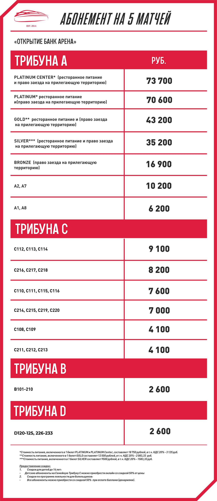
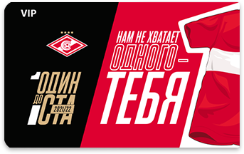

Дорогие красно-белые!
Сегодня мы открываем продажу абонементов на пять домашних матчей «Спартака» в сезоне-2021/2022!
Абонементная кампания пройдет в три этапа. Первоочередное право на покупку имеют владельцы
абонементов
сезона-2019/2020, а также обладатели абонементов на 5 домашних матчей сезона-2020/2021. Затем
возможность для приобретения получают держатели Карты болельщика. На заключительном этапе откроется
свободная продажа для всех желающих.
Каждый болельщик сможет купить не более 1 абонемента, оплатив часть стоимости денариями согласно
действующим правилам Программы лояльности клуба.
ЭТАПЫ ПРОДАЖ
01
На первом этапе доступ к мероприятию откроется для владельцев
абонементов сезона-2019/2020, абонементов на 5 домашних матчей в 2020-м и абонементов на
5
домашних матчей 2-го круга в 2021-м.
02
На втором этапе доступ к мероприятию будет у владельцев
абонементов
сезона-2019/2020, абонементов на 5 домашних матчей в 2020-м и абонементов на
5 домашних матчей 2-го круга в 2021-м, а также у держателей
Карты
болельщика.
03
На третьем этапе приобрести абонемент смогут
все желающие.
СПЕЦИАЛЬНОЕ ПРЕДЛОЖЕНИЕ
ОТ ПАРТНЕРА
ОТ ПАРТНЕРА
ПРЕИМУЩЕСТВА АБОНЕМЕНТА
актуальны только в период действия абонемента на 5 матчей

ПРОГРАММА ЛОЯЛЬНОСТИ
Приобретая абонемент на 5 матчей, вы становитесь участником Программы
лояльности «Спартака»и получаете привилегии от клуба. Например,
возможность
посещения специальных мероприятий на «Открытие Банк Арене».
ПРЕЙСКУРАНТ

На стадионе представлены три премиальные зоны
гостеприимства —
рестораны Platinum, Gold и Silver.
Приобретайте билеты на центральные места с лучшим видом на поле,
изысканным меню и правом заезда на парковочное пространство.

«Открытие Банк Арена» располагает комфортабельной
ВИП-зоной для
просмотра футбольных матчей. Информацию о
наличии ВИП-лож вы можете узнать в Контактном центре по телефону +7 (495)
111 1922.
Детские абонементы (до 14 лет включительно) на любой
сектор
семейной трибуны С можно приобрести в онлайне со скидкой
50%. Дети до 7 лет могут пройти на стадион бесплатно без права занятия
места.
* Если у вас есть абонемент или Карта болельщика, но система не
позволяет воспользоваться приоритетным правом покупки, пожалуйста, обратитесь по
электронному адресу
tickets@spartak.com или в Контактный центр по телефону:
+7 (495) 111 1922.
+7 (495) 111 1922.
Напоминаем, что посещение стадиона по-прежнему возможно лишь при соблюдении
предписанных
Роспотребнадзором и регламентом РПЛ мер безопасности:
— не забывайте маски (респираторы) и перчатки. Они будут в наличии при входе на стадион. В чаше арены вы сможете приобрести брендированные тканевые маски;
— ваша температура должна быть не выше 37,0°;
— соблюдайте социальную дистанцию между вами и другими зрителями на трибуне и прилегающей к стадиону территории (в том числе в зонах досмотра). Приходите на «Открытие Банк Арену». Поддержите любимую команду!
— не забывайте маски (респираторы) и перчатки. Они будут в наличии при входе на стадион. В чаше арены вы сможете приобрести брендированные тканевые маски;
— ваша температура должна быть не выше 37,0°;
— соблюдайте социальную дистанцию между вами и другими зрителями на трибуне и прилегающей к стадиону территории (в том числе в зонах досмотра). Приходите на «Открытие Банк Арену». Поддержите любимую команду!